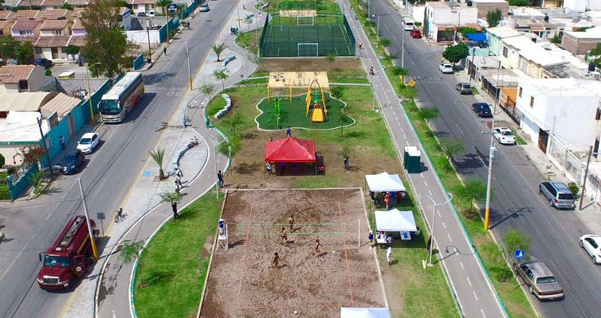
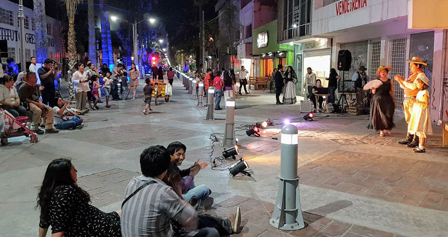

El nuevo modelo de planeación urbana que regirá el crecimiento de las ciudades de México en los próximos años está definido en la aprobada Ley de Asentamientos Humanos, Ordenamiento Territorial y Desarrollo Urbano. Esta ley, rompe con todos los paradigmas del siglo pasado para dar paso a la construcción de ciudades más habitables.
Con este esfuerzo, se da un paso importante en la reforma urbana que México y los municipios del país necesitan. Entre lo más sobresaliente se encuentra el incluir como principios: el derecho a la ciudad, garantizar el espacio público, la movilidad, la resiliencia y la sustentabilidad ambiental; además considera por primera vez el ámbito metropolitano en la planeación y gestión urbana; promueve la mezcla de usos de suelo; establece mecanismos de participación ciudadana y acceso a la información.
En el modelo anterior de planeación urbana el gobierno se enfocaba en regular y controlar estrictamente las alturas, lo que se podía construir o hacer en un lote individual o las actividades que se podían llevar a cabo dentro de un inmueble, es decir, elementos secundarios para la calidad de vida de las personas, por ser actividades que se encuentran en constante evolución. Los elementos que más influyen en el futuro y buen funcionamiento de una ciudad, es el espacio público.
La nueva ley redefine el rol del gobierno en la planeación y el desarrollo de las ciudades, al conferirle mayor responsabilidad en el diseño y construcción de espacio público, parques, vialidades e infraestructura de calidad que permitan la recreación, la vida comunitaria, la identidad, la funcionalidad y la capacidad de la ciudad para desarrollar diferentes actividades económicas en distintas zonas que perduren a través del tiempo.
En este sentido, los municipios del país deberán definir una estrategia para garantizar espacios públicos de calidad en cada colonia, barrio o fraccionamiento nuevo. Pero también la Ley prevé la recuperación y rescate de espacios públicos por causa de utilidad pública en colonias o barrios ya construidos, siempre que sea para uso comunitario y para la movilidad.
Con esta visión desde la Ley de Asentamientos Humanos, Ordenamiento Territorial y Desarrollo Urbano federal, se busca que cada vez más ciudades cuenten con esos espacios representativos, que brinden identidad colectiva, intercambio cultural, social y económico, como lo es el Parque Central en Nueva York, el Bosque de Chapultepec en la CDMX, o como la Alameda Zaragoza y el Bosque Venustiano Carranza en Torreón.
Pero también, la nueva Ley da la capacidad jurídica a los municipios para recuperar o rescatar áreas de la ciudad donde existan espacios subutilizados o que puedan ser aprovechados mediante la creación de espacios públicos para uso y disfrute de la vida comunitaria y de una mejor calidad de vida, como la Línea Verde en Torreón, donde se aprovechan las antiguas vías de Ferromex para convertirlo en un espacio público de calidad para todos los habitantes de esa área de la ciudad.
Para dar cumplimento a este nuevo modelo la Ley, otorga atribuciones a los municipios para que mediante sus planes municipales de desarrollo urbano, incluyan la ubicación de estos espacios públicos de mayor jerarquía dentro de su zonificación primaria, es decir, como elementos fundamentales en estos planes con visión a largo plazo.
El artículo 74 de la nueva ley fortalece e impulsa la creación, recuperación, mantenimiento y defensa del espacio público al mencionarlo como “… es principio de esta Ley y una alta prioridad para los diferentes órdenes de gobierno…”. En los planes o programas municipales de Desarrollo Urbano se definirá la dotación y mejor localización para estos espacios abiertos, como alta prioridad en la consolidación y crecimiento de la ciudad.
Ahora el espacio público se convierte en el eje central de la nueva ley y de la planeación urbana de las ciudades en México, que funcionan como espacios de transición y conexión entre barrios, que fomentan la pluralidad y la cohesión social.
La Linea Verde en Torreón es un ejemplo de recuperación de espacios públicos.

- Con una extension de 4.8 Km es un espacio público que impacta a 17 colonias.
- La población entorno a la Linea Verde es de 39,349 habitantes.
- Hay más de 1,000 actividades económicas entorno a la linea verde, la más representativa es el comercio al menudeo con el 68%.
- La ocupación por vivienda es de 3.9 personas.
El Paseo Morelos es otro ejemplo de recuperación del espacio público

Al convertir una vialidad en un espacio para el peatón y la vida comunitaria...
- Es un espacio público que promueve la movilidad no motorizada (peatonal y ciclista).
- Tiene una extensión de 1.7 Km.
- Hay más de 232 unidades económicas en el Paseo Morelos.
- El 69% de las unidades económicas tienen de 1 a 5 personas ocupadas.
Una versión de divulgación de este análisis apareció en Milenio Laguna
Milenio - El espacio público como centro del nuevo modelo urbano